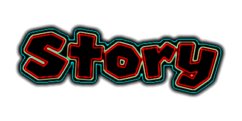
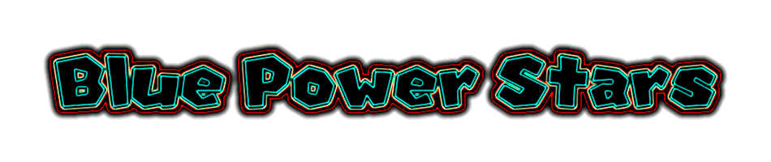
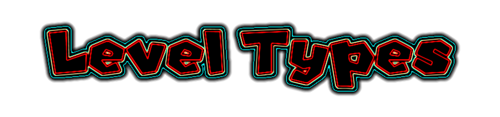
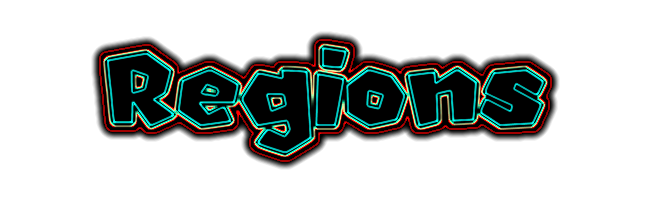
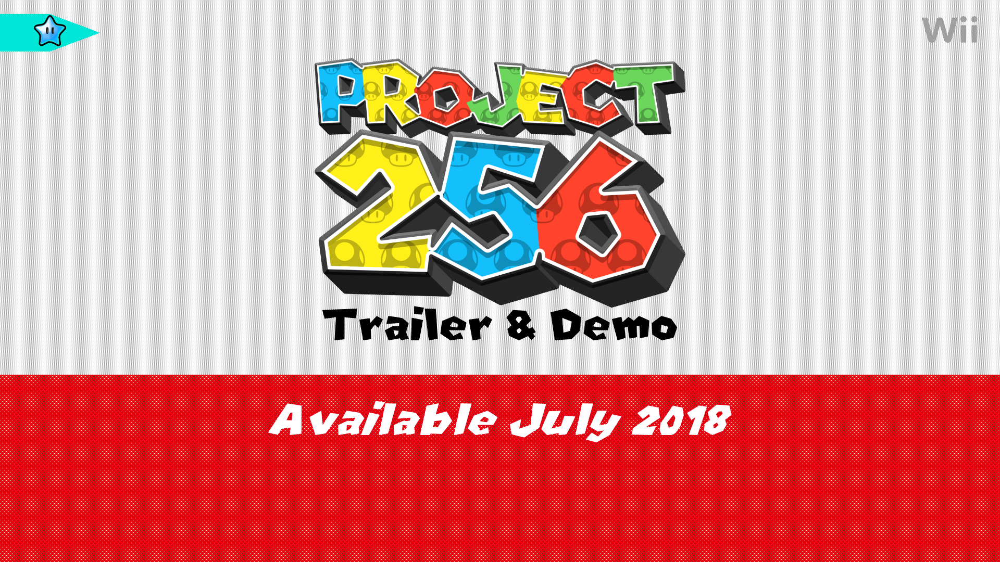

Screenshots look interesting! Might give the level a try later. There's a couple things I'd like to point out based on the screenshots, though.
1) There aren't any "glitches" with the tileset; all the proper connectors for ceiling slopes can be found in the tileset if you look closely (unless you're not using the retail sewer tileset...?):
Had some trouble with this myself actually, since I'm also making a sewer level currently.
2) Moving the one-way gate in the first screen to the left enough for it to connect with the terrain would look nicer. There also doesn't seem to be any Layer 2 rock tiles behind the Layer 1 rock edges to connect it with the other Layer 2 rock tiles, though I can't tell for sure.
3) I'd keep spacing in mind, especially if you are making levels that can include multiplayer. Having Question Blocks at least three blocks above the ground on most occasions is recommended, and perhaps move the pipe in the last screen a bit further from the ground.
4) Zone 1 may be too small for the camera setting, and Star Coins don't appear in some cases if they're close to the top of a Zone, so I'd make sure those things are working if you haven't already (always play test your levels).
5) Add more randomization to the ground inside of the sewer walls (there's tiles in the tileset for this as well).
Your attention to detail is great (using invisible blocks so that the "shadow" part of the sewer tiles isn't blocked out, using lava falls behind coins in some instances, etc.), and it's always good to see people still hacking NSMBWii. Keep up the good work!
EDIT: Also, use [ imgs ] [ /imgs ] (without the spaces) for larger images. Makes it look nicer: _________________________
2) Moving the one-way gate in the first screen to the left enough for it to connect with the terrain would look nicer. There also doesn't seem to be any Layer 2 rock tiles behind the Layer 1 rock edges to connect it with the other Layer 2 rock tiles, though I can't tell for sure.
IDK what you just said here, derp. It seems like an interesting piece of criticism but I would like the sentence to maybe a bit easier to understand. Pictures maybe?
Sure! I've never used the volcano tileset until I took these pics, so I didn't know whether you put Layer 2 rocks behind Layer 1 (shown on the right side of the pic), or whether you didn't (shown on the left):
It looks like you did it properly, so... awesome!
Also, the pic on the left is how you placed the gate, and the pic on the right is how you should place it:
The difference isn't super noticeable with the volcano tileset, but with other ones you can really tell when the gate connects to the ground and when it doesn't. _________________________
So I've taken a look at some of your levels. Inzio Grassland is decent for a first level of the game. Yozakura Summit is pretty good too but I feel it is a little empty. Sure, you got some Shy Guy variations and I do like were you put the Spike Thrower Shy Guy for the 3rd Star Coin, but most of it is temples and not that much to it. Considering your mixing a Japanese and a Snow Theme together, I sense there could be some Cooligans or some Snow Spikes to tighten up the difficulty and length. And Eclipse Ruins is a very interesting desert that involves entering doors to change the time. It reminds me of 4-6 in Super Mario Bros. 3, where you use a magic door and adjust the size. I find that really creative and I like how the Angry Sun and Angry Moon are in the Day and Night Zones.
I find the hack has a ton of amusing ideas. I'm curious to see more!
Thanks for the input! I've made a few changes to Inizio Grassland since the video. I'm thinking of using Snow Spikes in a snowball-themed level, but I can see how just having Shy Guys doesn't seemed varied, so I might add another enemy type in Yozakura Summit. That level in SMB3 was the inspiration for Eclipse Ruins, actually (and also the weather-changing level in one of Green Star Groove's trailers, heh heh). Glad you're curious. _________________________
Said I'd post my thoughts on the demo, so... here they are in no particular order (in a spoiler to save room)!
- I love the bonus room ideas, ranging from the golden coin room from 3D World to the star-collecting mini-game repurposed from Newer
- Orange/purple switches are awesome too, although a) you need one more color to complete the rainbow, and b) I felt the orange switch was a bit too obscure in its purpose in Cooligan Chill Hill, though this could be good or bad depending on whether or not you like trial and error
- Speaking of Cooligan Chill Hill, that second Star Coin invented trial and error (cue ragequit), but also was really clever, and Penguin Mario is fun, so... ?
- The fortress level was cool, but I'm wondering why the first room is... the first room, because half the screen was covered with hammers flying through the air
- Really liked the look of the jungle level, but was confused by the signs pointing upwards and the second Star Coin, although it seemed a lot more obvious the second time around
- Green Star House is a great idea, but I want to see more challenging ones as well
- Some moments in these levels were frustrating, but I appreciate the fact that it at least tries to challenge you
- Music was great... I think, wasn't really paying attention, but the two bits that stood out the most were the Starman music and the Jingle Bell Rock remix (as out-of-place as that may be, keep it in there, please)
- Having that Toad House with every kind of item was convenient, despite only finding out about that near the end
- On the subject of looks, the tilesets/recolors/whatever are really good
- Having a remake course is cool, but I'm not super familiar with the original, so didn't really do much for me
- There should be at least one level in the finished hack that you access via a portal, as a little reference to the demo... or not ¯\_(ツ)_/¯
- The other levels were good, don't have much to say about them though...
To sum it up, it was frustrating at times, great overall, keep up the good work!

With the birth of a new universe, Blue Power Stars have appeared in the Mushroom Kingdom. After studying these objects, Professor E. Gadd has created a Portal to another realm. Finding that many more Blue Stars lie in this world, the Toad Brigade ventured forth to collect these treasures. However, Bowser Jr., looking for the Stars as well, has locked the Toads away in Castles. Having just finished their previous adventure, Mario and his friends must rescue the Toad Brigade, recover the Blue Power Stars, and restore the Star Kingdom.

When the universe was reset, Blue Stars began to appear. While they
are rare in the Mushroom Kingdom, they are plentiful in the Star
Kingdom, a world accessed using their power. Most were stored in the
Star Sanctuary, but have been scattered by a resident of the Star
Kingdom to prevent their misuse. They replace Star Coins
as the three collectibles you can find in levels.

There are several new level types in Project 256. In Dash Levels, you must race to the Goal Pole with a timer of 100; in Enemy Encounter, you must defeat all of the enemies to reach the goal; and in Red Ring Rally, you must collect 8 Red Rings to unlock an exit.
There are Castles and Towers, but the four vehicle types of the Koopa Fleet pose the greatest danger. Each type is built for a different kind of element, and, according to rumors, has been upgraded thanks to tech stolen from Gadd Science, Incorporated. You'll find a Fleet vehicle in each of the four main regions of the Star Kingdom.

While there are many Worlds to explore in Project 256, they are all categorized by the Regions you find them in. Each World has a theme related to the others within its own Region. In addition, some levels exist "between Worlds" and combine multiple themes (such as Yozakura Summit), while others stand out as major roadblocks on your journey.
It is also said that there is a special kind of Palace in each main Region that can help you greatly if discovered...
Along with new levels, retro levels will also be featured in Project 256 as bonus content. More details will be announced at a later point.

Footage was unable to be prepared in time for this announcement. However, there will be a trailer, along with a demo, releasing next month. Until then, you can check the project's Discord for weekly screenshots and the YouTube channel for video updates.
This is looking pretty sweet! You've got some interesting ideas, like the power-up specific blocks, and that nifty day-night system in Eclipse Ruins, especially with the incorporation of the Angry Sun and Moon. Courses that have alternate layouts like that are very always very cool. Keep at it!
Firstly, I like the plot. It's simple and has some creativity like every Super Mario game should. I guess the universe resetting is a reference to SMG. If that is the case, then I find it slightly cool that blue stars would come from that. I really hope the Star Kingdom has more of an interesting backstories for these stars. The dash levels are nice concept, taking inspiration from NSLU and enemy encounters returning is actually nippy. I didn't know Red Ring Coins do other things beside spawn a power-up in.
Uhhh… I don't know what you mean by "vehicle types". I guess you are referring to the RemoCon Clown that appeared in the final boss of NerSMBW? If that is the case, then I guess that's cool.
I like how they are called regions. And I like the ideas of Roadblocks. And I also like the concept of palaces. I can't wait to see how these work.
I'd enjoyed doing a couple of screenshots for these things and I can't wait to see what other retro levels come in the future. I can't wait for a trailer! It seems like you worked pretty hard on some of this stuff.
That plot point does refer to Super Mario Galaxy. The Star Kingdom backstory is fairly interesting, but I wanna avoid giving away too many details on that. Red Rings can activate Events, so you can actually do a bunch of stuff with them. "Vehicle types" refers to Airships, Tanks and the like (should've been less vague, heh heh), though RemoCon Clowns are involved with those levels. Thanks for sharing your thoughts! _________________________


{kind=link}
{kind=link}
{kind=link}
{kind=link}
{kind=link}
{kind=link}
{kind=link}